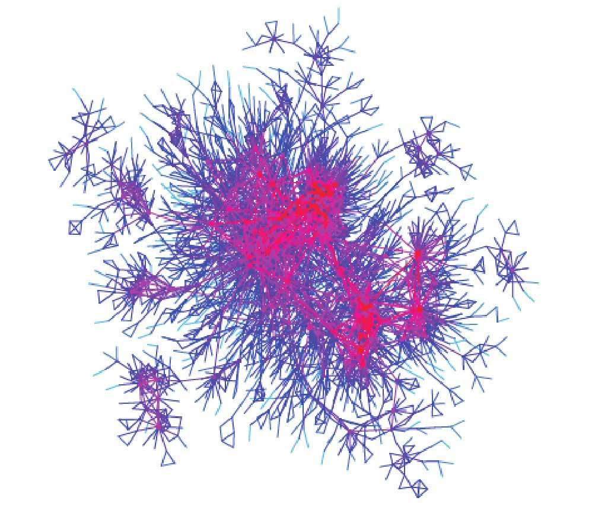
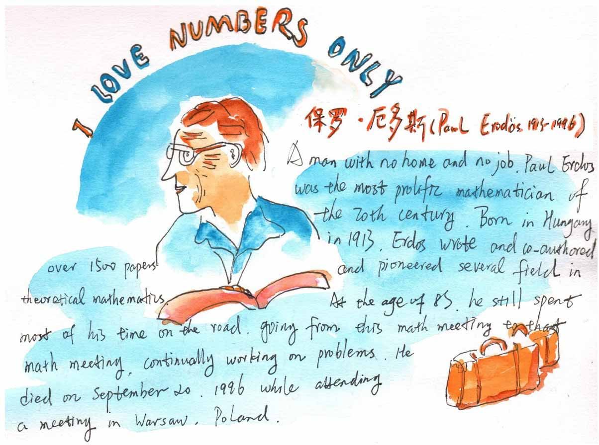

小文，接下来我们将要了解两个图模型，一个是好莱坞图，另一个是数学家合作图。
好莱坞是全球电影产业的中心，星光璀璨。用顶点表示演员，当两个顶点所表示的演员共同出演一部电影时，就连接这两个顶点，这样就可以得到好莱坞图。
根据互联网电影数据库，2001年11月好莱坞图有574724个点和超过1600万条边，这些顶点所表示的演员出现在292609部电影中。2011年的好莱坞图中有2180759个点，22898万条边，平均每个点的度数为105，这是一个很大的图。
好莱坞图中有个参数叫培根数，凯文·培根（Kevin Bacon）是好莱坞的一个演员，以多产著称。在好莱坞图中某个演员的培根数为连接这个演员和凯文·培根的最短路径的长度。比如，凯文·培根自己的培根数是0，那些与培根直接合作过的演员的培根数是1。

好莱坞图的一个子图
甄子丹在2016年与演员福里斯特·惠特克（Forest Whitaker）一起出演过电影《盗侠一号》，而后者在2007年与凯文·培根合作拍摄过电影《我呼吸的空气》，所以甄子丹与培根的最短路径的长度是2，他的“培根数”是2。
“互联网电影数据库”的统计数据表明，全世界有200多万名演员都能和培根拉上关系，最大的培根数是10，平均培根数只有3.027。
随着新电影（包括凯文·培根的新电影）的不断产生，演员们的培根数也在不断地发生变化。
接下来，让我们离开帅哥靓女云集的电影圈，再看看略显严谨的数学家圈子。
有一个数学家，他喜欢常年周游世界，访问各国数学家，他没有固定的家，他的名字叫保罗·厄多斯（Paul Erdös），厄多斯对物质生活极不重视，他的全部财产就是随身携带的几只旧皮箱。
厄多斯是一个多产的数学家，这里“多产”指的是他的论文。他每到一处演讲，经常就能跟该处的一两个数学家合作写论文。
据说多数情况是这样的，人们把一些长期解决不了的问题拿来与他讨论，他通常很快就能给出问题的解决方法和答案，于是人们赶紧把结果写下来，然后发表，这样与厄多斯联名发表的一篇新论文就诞生了。这样的数学论文前后有一千多篇。

厄多斯和别人合写的论文实在太多，所以有人定义了数学家的合作图和厄多斯数。
在数学家的合作图中，点表示各国的数学家，如果两个数学家联名写过论文，就将相应的两个点连接起来，某个数学家的厄多斯数就是该数学家和保罗·厄多斯所代表的两个顶点之间的最短通路长度。
厄多斯本人的厄多斯数为0，与厄多斯一起联名写过论文的数学家的厄多斯数是1，与厄多斯数为1的人合写过论文的人的厄多斯数为2，以此类推。
据统计大约有200000位数学家有确定的厄多斯数，越顶级的数学家的厄多斯数越小，菲尔兹奖获得者的平均厄多斯数是3，数学家丘成桐先生的厄多斯数是2。至厄多斯逝世，有485位科学家与其合作过（厄多斯数是1）。